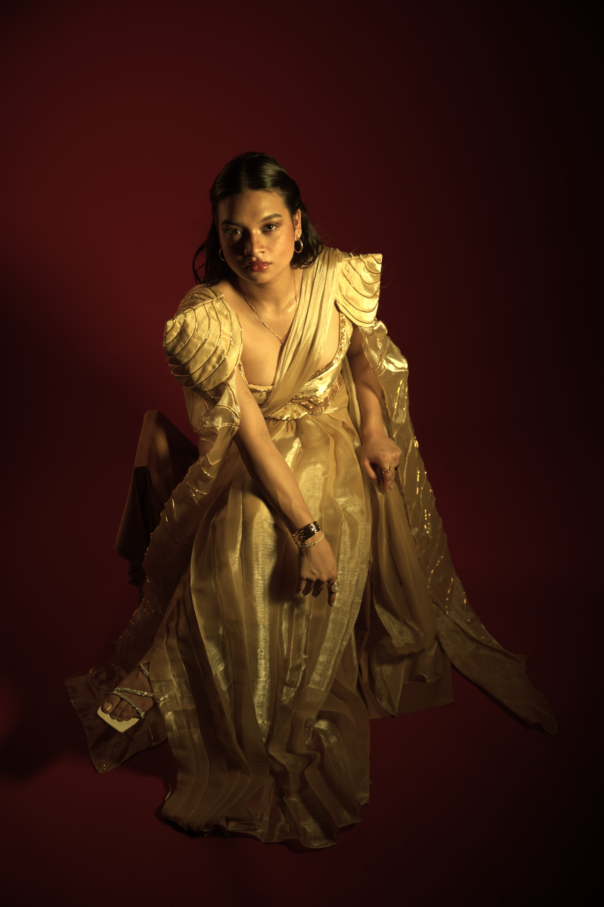
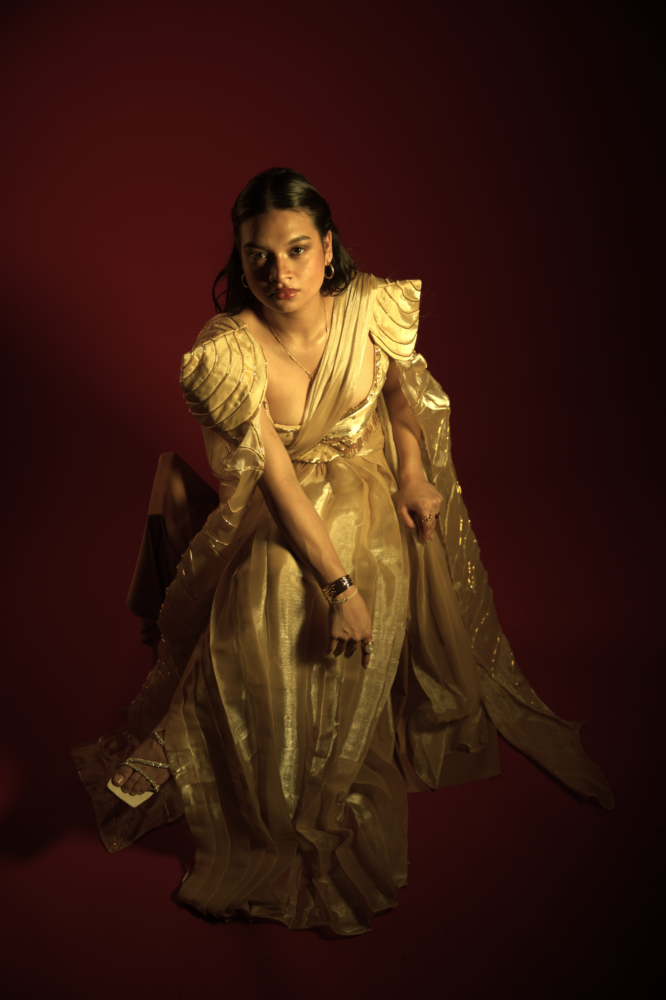
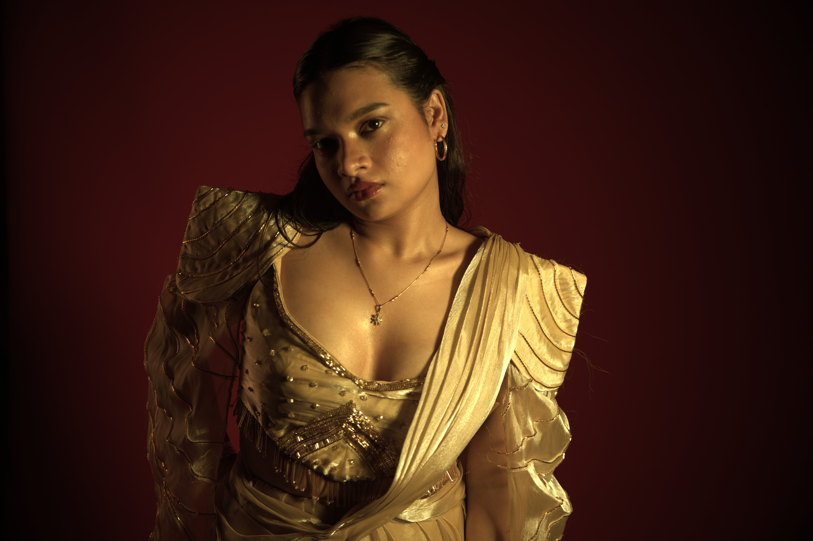
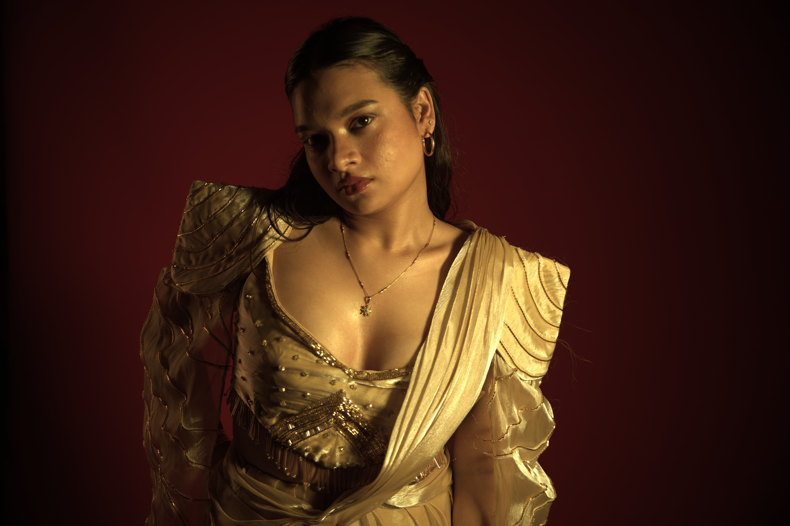

travis edit
a raw, moody celebrity-inspired styling piece capturing energy and rebellion through sharp contrasts and textures.


a raw, moody celebrity-inspired styling piece capturing energy and rebellion through sharp contrasts and textures.
a bold visual direction for a hypothetical h&m campaign — vibrant tones and crisp, retail-forward styling.


a handcrafted anarkali piece styled with softness — layers, movement, and natural textures.


a minimal, urban hypothetical for levi’s — denim redefined through light, grit, and clean composition.


a fashion-forward styling concept — bold silhouettes and cinematic stillness in every frame.


 

 
